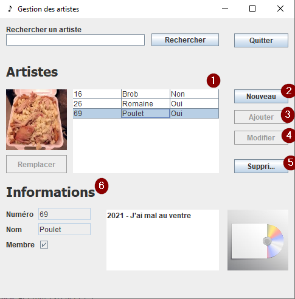

Fenêtre Gestion des artistes
Retour à l'index
Voici une image de l'interface de la gestion des artistes

L'interface de la gestion des artistes permet de :
- Consulter les différents artistes
- Créer un nouvel artiste à ajouter dans la BD et le tableau
- Ajouter l'artiste une fois les informations entrées
- Modifier les informations d'un artistes dans la BD et le tableau
- Enlever un artiste de la BD et du tableau
- Consulter les informations et les albums d'un artiste
Retour à l'index